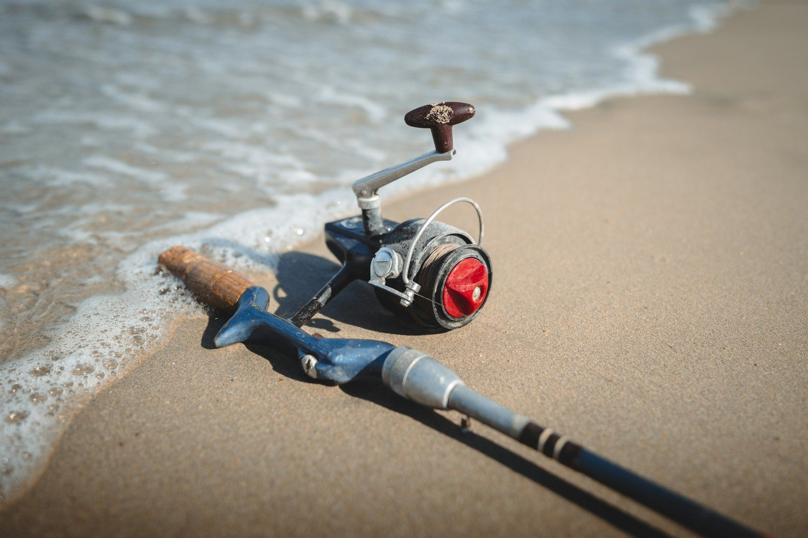

Le club
Pour les passionnés de pêche, débutants ou confirmés, à la recherche des plus belles pièces des rivières, estuaires et océans du Gabon.

Damien ZISSMAN
Spécialiste du guidage en milieu tropical, il connaît les marées, les courants et le comportement des poissons des plus beaux spots du littoral : estuaire du Komo, lagune de Setté Cama, parc national de Loango.
- Surfcasting depuis les plages sauvages
- Pêche aux leurres en mangrove
- Jig, popper et poissons nageurs au large
La pirogue du club
9,50 mètres
Stable et spacieuse, pour pêcher à quatre confortablement.
2 × 115 cv
Pour rejoindre vite les spots du large et de l'Estuaire.
Sécurité
Gilets pour tous, trousse de secours, radio et météo vérifiée avant chaque départ.
Tout compris
Matériel de pêche et boissons inclus.
La case du club
Face à Libreville, à la Pointe Denis, la case du Fishing Gabon Club accueille les pêcheurs pour prolonger l'aventure : pêche du bord, repos entre deux marées et coucher de soleil sur l'Estuaire.
Nous demander les dates →
Une pêche responsable
No kill
Les tarpons sont relâchés après la photo.
Baleines
Observation à distance, moteur coupé, sans poursuite.
Partage
Le plaisir de la pêche, c'est le partage d'aventures.
Prêt à lancer ?
Réservez au moins 48 h à l'avance. Matériel de pêche et boissons inclus.